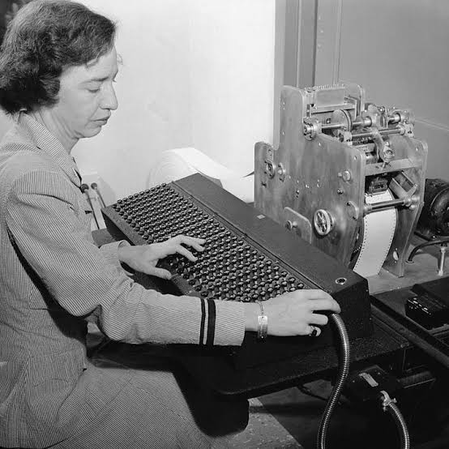

Карьера.
Вторая мировая война В 1943 году взяла отпуск в Вассаре и зачислилась добровольцем по программе WAVES в резерв ВМС США. Её приняли в виде исключения; ей недоставало 15 фунтов (6,8 кг) до нижней границы веса — 120 фунтов (54 кг). Поступила на службу в декабре и училась в Школе курсантов резерва в колледже Смит в Нортгемптоне (Массачусетс). Окончила обучение с лучшими результатами в классе и в звании младшего лейтенанта была назначена в бюро артиллерийских вычислительных проектов при Гарвардском университете, где занималась программированием на компьютере Mark I под руководством Говарда Эйкена. Эйкен и Хоппер были соавторами трёх статей о компьютере Марк I, также известном как счётное устройство с автоматической последовательностью операций. Просьба Хоппер о переводе в регулярный флот не была удовлетворена в связи с возрастом (38 лет). Она продолжила службу в запасе. Хоппер оставалась в Гарвардской лаборатории вычислений (Harvard Computation Lab) до 1949 года, отказавшись от должности полного профессора в Вассаре в пользу исследовательской работы в Гарварде по контракту с флотом[14].